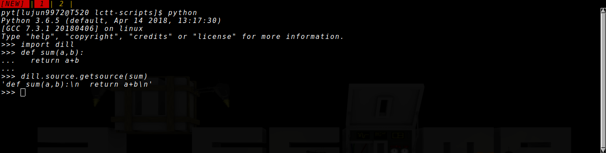

如何获取Python对象的源代码
有时候我们会想要知道某个Python函数、类或者模块(我们把这些东西统称为Python的对象)是怎么定义的，或者找出它们是在哪个文件中定义的。
有两个库能够帮我们做到这一点，一个是内置的 inspect 库，一个是第三方的 dill 库
inspect库
用 help(inspect) 能看到关于 inspect 的描述如下：
DESCRIPTION
This module encapsulates the interface provided by the internal special
attributes (co_*, im_*, tb_*, etc.) in a friendlier fashion.
It also provides some help for examining source code and class layout.
我们主要是使用该模块的 getsource* 系列函数，即：
inspect.getsource(object)函数以单字符串的形式返回某个python对象的源代码import inspect return inspect.getsource(inspect.getsource)
def getsource(object): """Return the text of the source code for an object. The argument may be a module, class, method, function, traceback, frame, or code object. The source code is returned as a single string. An OSError is raised if the source code cannot be retrieved.""" lines, lnum = getsourcelines(object) return ''.join(lines)
inspect.getsourcefile(object)函数返回某个python对象在哪个文件中定义import inspect return inspect.getsourcefile(inspect.getsourcefile)
/usr/lib/python3.6/inspect.py
inspect.getsourcelines(object)函数返回一个元组，其中包含了python对象源代码的list，以及其在源代码中定义的起始行import inspect return inspect.getsourcelines(inspect.getsourcelines)
(['def getsourcelines(object):\n', ' """Return a list of source lines and starting line number for an object.\n', '\n', ' The argument may be a module, class, method, function, traceback, frame,\n', ' or code object. The source code is returned as a list of the lines\n', ' corresponding to the object and the line number indicates where in the\n', ' original source file the first line of code was found. An OSError is\n', ' raised if the source code cannot be retrieved."""\n', ' object = unwrap(object)\n', ' lines, lnum = findsource(object)\n', '\n', ' if ismodule(object):\n', ' return lines, 0\n', ' else:\n', ' return getblock(lines[lnum:]), lnum + 1\n'], 946)
然而, inspect 有一个缺陷，那就是无法获取interactive python session中定义对象的源代码:
import inspect def sum(a,b): return a+b return inspect.getsource(sum)
Traceback (most recent call last):
File "<stdin>", line 8, in <module>
File "<stdin>", line 6, in main
File "/usr/lib/python3.6/inspect.py", line 968, in getsource
lines, lnum = getsourcelines(object)
File "/usr/lib/python3.6/inspect.py", line 955, in getsourcelines
lines, lnum = findsource(object)
File "/usr/lib/python3.6/inspect.py", line 786, in findsource
raise OSError('could not get source code')
OSError: could not get source code
若想要能够获取interactive python session中定义对象的源代码,则可以使用第三方的 dill 库
dill库
dill 有一个 source 子module，它提供了跟 inspect 非常类似的API接口:
dill.source.getsource函数
import dill return dill.source.getsource(dill.source.getsource)
def getsource(object, alias='', lstrip=False, enclosing=False, \ force=False, builtin=False): """Return the text of the source code for an object. The source code for interactively-defined objects are extracted from the interpreter's history. The argument may be a module, class, method, function, traceback, frame, or code object. The source code is returned as a single string. An IOError is raised if the source code cannot be retrieved, while a TypeError is raised for objects where the source code is unavailable (e.g. builtins). If alias is provided, then add a line of code that renames the object. If lstrip=True, ensure there is no indentation in the first line of code. If enclosing=True, then also return any enclosing code. If force=True, catch (TypeError,IOError) and try to use import hooks. If builtin=True, force an import for any builtins """ # hascode denotes a callable hascode = _hascode(object) # is a class instance type (and not in builtins) instance = _isinstance(object) # get source lines; if fail, try to 'force' an import try: # fails for builtins, and other assorted object types lines, lnum = getsourcelines(object, enclosing=enclosing) except (TypeError, IOError): # failed to get source, resort to import hooks if not force: # don't try to get types that findsource can't get raise if not getmodule(object): # get things like 'None' and '1' if not instance: return getimport(object, alias, builtin=builtin) # special handling (numpy arrays, ...) _import = getimport(object, builtin=builtin) name = getname(object, force=True) _alias = "%s = " % alias if alias else "" if alias == name: _alias = "" return _import+_alias+"%s\n" % name else: #FIXME: could use a good bit of cleanup, since using getimport... if not instance: return getimport(object, alias, builtin=builtin) # now we are dealing with an instance... name = object.__class__.__name__ module = object.__module__ if module in ['builtins','__builtin__']: return getimport(object, alias, builtin=builtin) else: #FIXME: leverage getimport? use 'from module import name'? lines, lnum = ["%s = __import__('%s', fromlist=['%s']).%s\n" % (name,module,name,name)], 0 obj = eval(lines[0].lstrip(name + ' = ')) lines, lnum = getsourcelines(obj, enclosing=enclosing) # strip leading indent (helps ensure can be imported) if lstrip or alias: lines = _outdent(lines) # instantiate, if there's a nice repr #XXX: BAD IDEA??? if instance: #and force: #XXX: move into findsource or getsourcelines ? if '(' in repr(object): lines.append('%r\n' % object) #else: #XXX: better to somehow to leverage __reduce__ ? # reconstructor,args = object.__reduce__() # _ = reconstructor(*args) else: # fall back to serialization #XXX: bad idea? #XXX: better not duplicate work? #XXX: better new/enclose=True? lines = dumpsource(object, alias='', new=force, enclose=False) lines, lnum = [line+'\n' for line in lines.split('\n')][:-1], 0 #else: object.__code__ # raise AttributeError # add an alias to the source code if alias: if hascode: skip = 0 for line in lines: # skip lines that are decorators if not line.startswith('@'): break skip += 1 #XXX: use regex from findsource / getsourcelines ? if lines[skip].lstrip().startswith('def '): # we have a function if alias != object.__name__: lines.append('\n%s = %s\n' % (alias, object.__name__)) elif 'lambda ' in lines[skip]: # we have a lambda if alias != lines[skip].split('=')[0].strip(): lines[skip] = '%s = %s' % (alias, lines[skip]) else: # ...try to use the object's name if alias != object.__name__: lines.append('\n%s = %s\n' % (alias, object.__name__)) else: # class or class instance if instance: if alias != lines[-1].split('=')[0].strip(): lines[-1] = ('%s = ' % alias) + lines[-1] else: name = getname(object, force=True) or object.__name__ if alias != name: lines.append('\n%s = %s\n' % (alias, name)) return ''.join(lines)
dill.source.getsourcefile函数
import dill return dill.source.getsourcefile(dill.source.getsourcefile)
/usr/lib/python3.6/inspect.py
dill.source.getsourcelines函数
import dill return dill.source.getsourcelines(dill.source.getsourcelines)
(['def getsourcelines(object, lstrip=False, enclosing=False):\n', ' """Return a list of source lines and starting line number for an object.\n', " Interactively-defined objects refer to lines in the interpreter's history.\n", '\n', ' The argument may be a module, class, method, function, traceback, frame,\n', ' or code object. The source code is returned as a list of the lines\n', ' corresponding to the object and the line number indicates where in the\n', ' original source file the first line of code was found. An IOError is\n', ' raised if the source code cannot be retrieved, while a TypeError is\n', ' raised for objects where the source code is unavailable (e.g. builtins).\n', '\n', ' If lstrip=True, ensure there is no indentation in the first line of code.\n', ' If enclosing=True, then also return any enclosing code."""\n', ' code, n = getblocks(object, lstrip=lstrip, enclosing=enclosing, locate=True)\n', ' return code[-1], n[-1]\n'], 300)
不过它还支持获取interactive python session中定义对象的源代码: 